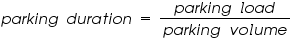
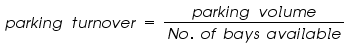
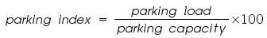
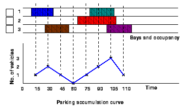
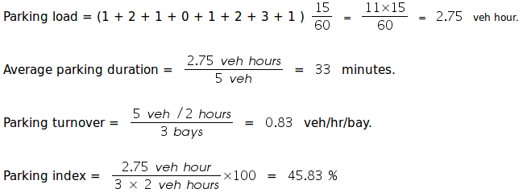
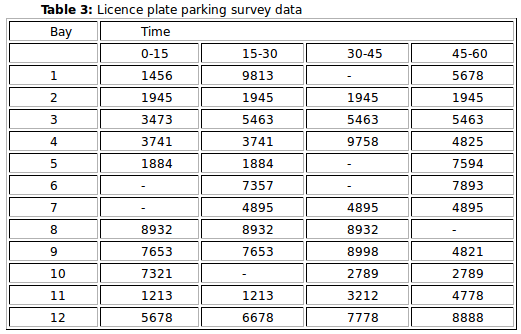
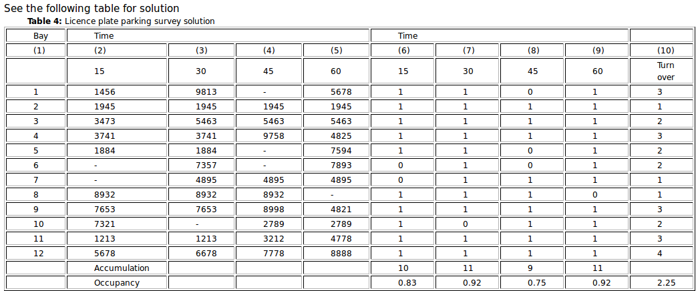
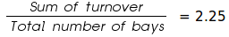
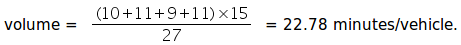
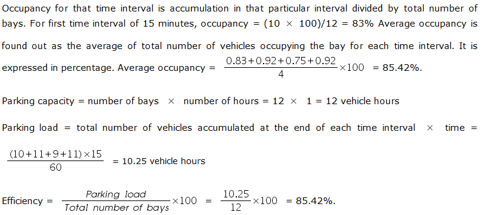

Parking is one of the major problems that is created by the increasing road traffic. It is an impact of transport development. The availability of less space in urban areas has increased the demand for parking space especially in areas like Central business district. This affects the mode choice also. This has a great economical impact.
Before taking any measures for the betterment of conditions, data regarding availability of parking space, extent of its usage and parking demand is essential. It is also required to estimate the parking fares also. Parking surveys are intended to provide all these information. Since the duration of parking varies with different vehicles, several statistics are used to access the parking need.
Parking statistics
Parking accumulation: It is defined as the number of vehicles parked at a given instant of time. Normally this is expressed by accumulation curve. Accumulation curve is the graph obtained by plotting the number of bays occupied with respect to time.
Parking volume: Parking volume is the total number of vehicles parked at a given duration of time. This does not account for repetition of vehicles. The actual volume of vehicles entered in the area is recorded.
Parking load: Parking load gives the area under the accumulation curve. It can also be obtained by simply multiplying the number of vehicles occupying the parking area at each time interval with the time interval. It is expressed as vehicle hours.
Average parking duration: It is the ratio of total vehicle hours to the number of vehicles parked.

Parking turnover: It is the ratio of number of vehicles parked in a duration to the number of parking bays available. This can be expressed as number of vehicles per bay per time duration.

Parking index: Parking index is also called occupancy or efficiency. It is defined as the ratio of number of bays occupied in a time duration to the total space available. It gives an aggregate measure of how effectively the parking space is utilized. Parking index can be found out as follows.

To illustrate the various measures, consider a small example in figure 1, which shows the duration for which each of the bays are occupied(shaded portion). Now the accumulation graph can be plotted by simply noting the number of bays occupied at time interval of 15, 30, 45 etc. minutes is shown in the figure.

The various measures are calculated as shown below:
Parking volume= 5 vehicles. 
License plate method of survey:
This results in the most accurate and realistic data. In this case of survey, every parking stall is monitored at a continuous interval of 15 minutes or so and the license plate number is noted down. This will give the data regarding the duration for which a particular vehicle was using the parking bay. This will help in calculating the fare because fare is estimated based on the duration for which the vehicle was parked. If the time interval is shorter, then there are less chances of missing short-term parkers. But this method is very labor intensive.

The parking survey data collected from a parking lot by license plate method is as shown in the table 3 below. Find the average occupancy, average turnover, parking load, parking capacity and efficiency of the parking lot.


Columns 1 to 5 are the input data. The parking status in every bay is coded first. If a vehicle occupies that bay for that time interval, then it has a code 1. This is shown in columns 6, 7, 8 and 9 of the table corresponding to the time intervals 15, 30, 45 and 60 seconds.
- Turn over is computed as the number of vehicles present in that bay for that particular hour. For the first bay, it is counted as 3. Similarly, for the second bay, one vehicle is present throughout that hour and hence turnout is 1 itself. This is being tabulated in column 10 of the table. Average turn over =

- Accumulation for a time interval is the total of number of vehicles in the bays 1 to 12 for that time interval. Accumulation for first time interval of 15 minutes = 1+1+1+1+1+0+0+1+1+1+1+1 = 10
- Parking volume = Sum of the turn over in all the bays = 27 vehicles
- Average duration is the average time for which the parking lot was used by the vehicles. It can be calculated as sum of the accumulation for each time interval x time interval divided by the parking


Traffic Engineering Laboratory
Indian Institute of Technology Bombay
Principal Investigator: Dr. Tom V Mathew, IIT Bombay
The Traffic Engineering Laboratory at IIT Bombay is a unique interdisciplinary program in the country that provide remote-access to Labs in Traffic Engineering. These experiments would cater to students at the undergraduate level, post graduate level as well as to research scholars and enthuse students to conduct experiments by arousing their curiosity. This would help them in learning basic and advanced concepts through remote experimentation. Students can avail the various tools for learning, including simulation and self evaluation.
Contact Us
Principal Investigator
Dr. Tom V Mathew
Associate Professor
Department of Civil Engineering
Indian Institute of Technology Bombay
Powai, Mumbai - 400076, India
Tel: +91-22-2576 7349
Fax: +91-22-2576 7302
Email: tvm@civil.iitb.ac.in, tvmathew@gmail.com
Team:
Ashish Cheriyan
Research Assistant
Email : cherian_ashish@yahoo.com
Chitra Sharma
Research Assistant
Email : chitsharma86@gmail.com